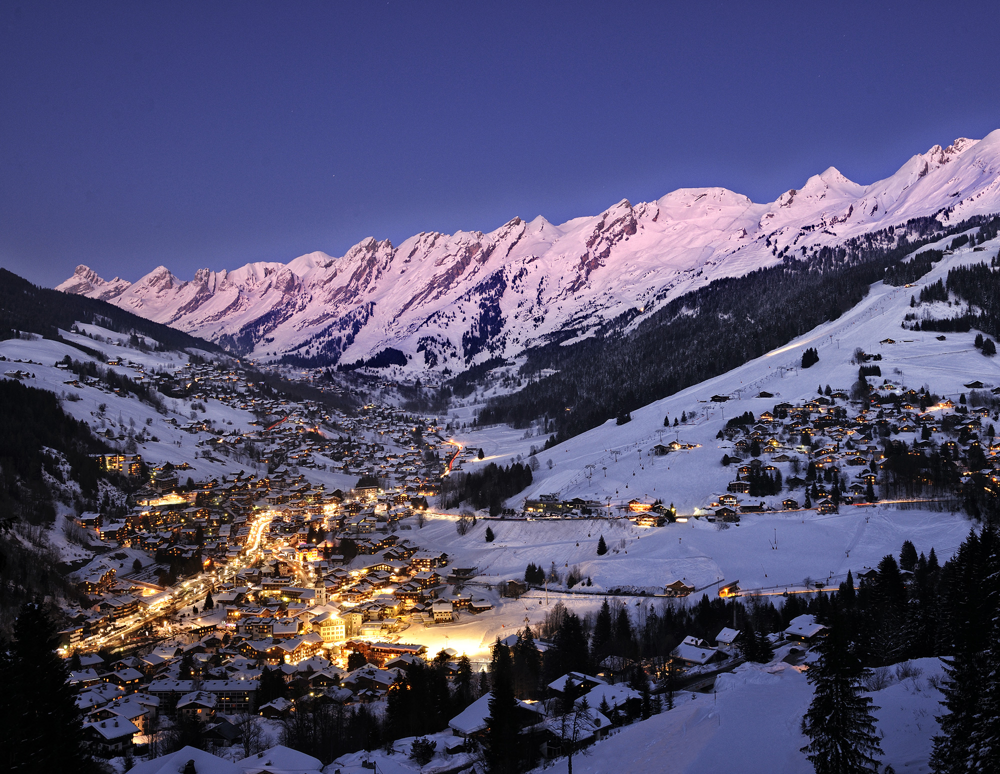
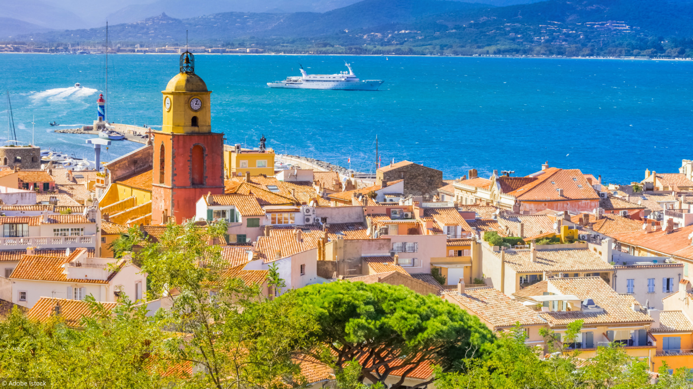

Station authentique et très actuelle, La Clusaz vous séduira par ses multiples facettes : sérénité et dynamisme, dépaysement et facilité d'accès, traditions séculaires et modernité. À deux pas d'Annecy, la station de la Clusaz cultive l'excellence en entrant dans le très sélect "Top of the French Alps", qui garantit des prestations de qualité aux clientèles internationales les plus exigeantes. A la Clusaz, vous découvrez la chaleur de l'accueil haut-savoyard grâce à des professionnels passionnés, amoureux de leur région et attentifs à leurs hôtes. La tête au soleil, le corps immergé dans une eau à 29°C avec vue sur les pistes : que ce grand bain fait du bien ! Et demain, pourquoi ne pas profiter de l'air montagnard lors d'une balade en chiens de traîneau ou une randonnée en raquettes ? Ou se laisser cocooner avec un massage aux pierres chaudes après un baptême de parapente ? Tous les choix sont à la Clusaz, avec un seul mot d'ordre : le plaisir. Station internationale et dynamique, été comme hiver, La Clusaz se love dans ses paysages alpins et vous propose un voyage exceptionnel dans son cadre préservé. Des amoureux de la nature aux mordus de la montagne, des sportifs aux adeptes du bien vivre, tous y trouveront leur bonheur à seulement 30 min d’Annecy et 50 min de l’aéroport international de Genève…
A partir de 541€/semaine

Le village mythique de Saint-Tropez, rendu célèbre par l'actrice Brigitte Bardot, attire les célébrités et les visiteurs du monde entier. Tranquille et authentique de l'automne au printemps, cet ancien village de pêcheurs se transforme, en été, en une station balnéaire branchée et réputée, avec son port animé où viennent s'amarrer voiliers et yachts luxueux, ses terrasses de cafés, ses boutiques de créateurs ou encore ses boîtes de nuits. Ambiance festive et estivale garantie ! Le port pittoresque, bordé de maisons aux façades colorées, le quartier typique de la Ponche ou encore la place des Lices, tant prisée des boulistes, participent au charme du village.